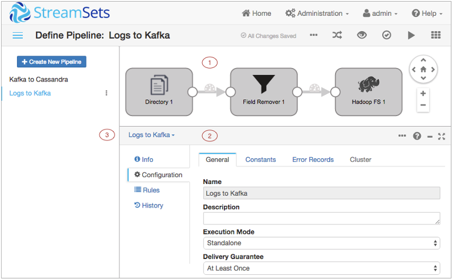

Data Collector Console
Data Collector provides a console to configure pipelines, preview data, monitor pipelines, and review snapshots of data.
The Data Collector console includes the following general areas and icons:

| No | Name | Description |
|---|---|---|
| 1 | Pipeline canvas | Canvas for configuring or monitoring a pipeline. |
| 2 | Properties panel / Preview panel / Monitor panel | When you configure a pipeline, the Properties panel displays the properties of the
pipeline or selected stage. You can resize, minimize and maximize the panel. When you preview data, the Preview panel displays the input and output data for the selected stage or group of stages. When you monitor a running pipeline, the Monitor panel displays real-time metrics and statistics. Note: Some icons and options might not display in the
console. The items that display are based on the task that you are
performing and roles assigned to your user account.
|
| Home icon | Displays a home page with a list of pipelines and their statuses. | |
| Notifications icon | Displays notifications. | |
| Administration icon | Provides access to Data Collector configuration properties, directories, and log. Also allows you to shut down Data Collector. | |
| User icon | Displays the active user and the roles assigned to the user. Also allows you to log out of the console. | |
| Help icon | Provides access to the online help, the REST API, and the Data Collector version. Also allows you to define display settings and the online help version to use. | |
| More icon |
Provides additional actions for the pipeline. Use to import, export, duplicate, or delete a pipeline. |
For information about pipeline configuration options, see Data Collector Console - Edit Mode.
For information about data preview options, see Data Collector Console - Preview Mode.
For information about pipeline monitoring options, see Data Collector Console - Monitor Mode.
For information about maintaining pipelines on the Home page, see Data Collector Console - All Pipelines on the Home Page.
Configuring Console Settings
You can configure how information in the Data Collector console displays, such as the online help version, information density in the panel, and the pipeline creation help bar.